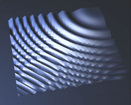
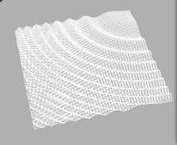
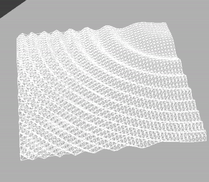

We ultimately were trying to create a 3D simulation of fluidity. We wanted to see simulated particles interact with one another just as water particles do due to our curiosity in the behavior and physical properties behind water. This could possibly benefit gaming companies or scientists due to the possibility for improved rendering speed and quality of water simulation along with the ability to save time and resources by conducting water related experiments virtually. Over the course of this project, we started off with our project 4 code and incorporated the Height Field approximation to be able to replicate fluidity. Also, we modified our files such as Phong.frag or cloth.cpp, and adjusted the shaders to replicate the texture of water surface.
The core component of the project is a simulator for the surface of a fluid. Initially, we built off our cloth simulator code from Project 4, using the point mass mesh to represent the fluid surface instead of a cloth. From here, we implemented the heightfield approximation algorithm to control the z dimension of the point masses. In this algorithm, the height and vertical velocity of each location [i, j] is stored in an array of size N x M. In each simulation loop, the velocity at a point is first updated according to the difference between the surrounding heights and that position’s height, then this velocity is dampened, then the height is updated according to the velocity. This is repeated for every position in the array.
While implementing this algorithm, our initial results showed the fluid plane oscillating violently and the height of the fluid surface was much larger in magnitude than looked reasonable (higher peaks and deeper troughs). We realized that this was in part due to the foundation of the point mass mesh that the rendering was based off of, and modified the algorithm to not add depth to a separate array with heights but to add it to the pointmasses used to render the array, and not both. In addition, we modified the averaging sequence used in the approximation to 4 times the step size since in the base algorithm, it was assumed the step size was one.
Over the course of this project, we simultaneously learned a lot about both fluid physics and graphics implementations. Our initial research introduced us to the Navier-Stokes equations, the guiding light of fluid mechanics, as well as multiple ways that these equations were directly implemented or approximated for real-time graphical applications such as direct implementation of the differential equations, Eulerian and Lagrangian viewpoints, particle systems, as well as approximations such as the heightfield approximation that we ultimately decided to use for its computational simplicity. We saw and experienced again first-hand a departure from physically accurate principles for less computationally expensive simulation, a tradeoff we’ve seen previously in the course in, for example, implementing lighting and shading. Finally, from both a physics and graphics perspective, we also learned that no viscosity is a common approximation made since inviscid fluids are much simpler to characterize and model, and implicitly implemented this approximation in our final result.
|

|

|

|
This writeup is published at: https://cal-cs184-student.github.io/sp22-project-webpages-p-amyjiang/finalproj/final.html